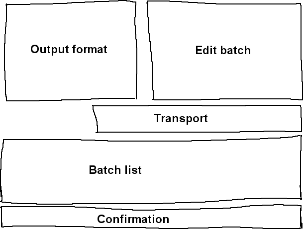
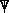

.
.
| [ << ] | [ >> ] | [Top] | [Contents] | [Index] | [ ? ] |
Idealmente, todos los contenidos estarían almacenados en discos duros, CD-ROM, memorias flash o DVD, de modo que cargarlos en Cinelerra sería tan sencillo como cargar un archivo. En realidad hay muy pocas fuentes de material original a las que se pueda acceder como un sistema de ficheros: frecuentemente confían en mecanismos de transporte de cinta o o extraños procedimientos de entrada/salida para transferir los datos entre computadores. Estos tipos de contenidos se importan en Cinelerra mediante el diálogo Grabación.
El primer paso para realizar una grabación es configurar el dispositivo de entrada. En el menú Preferencias->Preferencias... se presentan algunos parámetros, descritos en . Estos parámetros se aplican a la grabación independientemente de la configuración del proyecto, porque los parámetros de grabación suelen coincidir con la máxima capacidad del hardware, mientras que la configuración del proyecto suele cambiar con cada nuevo proyecto.
Se puede grabar una fuente de entrada/salida desde el menú Fichero->Grabar.... Se abre un diálogo que solicita un formato de salida, igual que en el caso del renderizado. Una vez escogido el formato aparecen la ventana y el monitor de grabación.
La ventana de grabación se divide en regiones. Aunque muchos parámetros varían dependiendo de la naturaleza del fichero (audio, vídeo), las regiones de la ventana siempre son las mismas.

Áreas en que se divide la ventana de grabación.
La grabación en Cinelerra se organiza en torno al concepto de lotes. En esencia,
un lote sirve para definir un fichero de salida diferente para el resultado de la grabación.
Por el momento podemos ignorar este concepto por entero y grabar simplemente pulsando el botón
de grabación .
El botón de grabación abre el fichero de salida actual si no está ya abierto, y escribe
en él los datos capturados. El botón de parada permite detener la grabación. Para continuar
grabando se debe pulsar de nuevo el botón de grabación, en cuyo caso los nuevos datos de
la grabación se añadirán al fichero de salida a partir del final del mismo. En el caso de
que se esté grabando un archivo de vídeo existe un botón que permite grabar un único
fotograma,  .
.
Cuando se ha grabado suficiente material y se desea detener el proceso, se debe escoger un método de inserción de entre las diferentes Estrategias de inserción y pulsar el botón Cerrar.
Ahora llegamos al concepto de lotes. Los lotes intentan hacer que los datos de entrada/salida parezcan más como un sistema de ficheros. Tradicionalmente los lotes se usaban para dividir una cinta en varios programas diferentes y guardar cada uno de ellos como un fichero diferente, en lugar de grabar todos los datos seguidos en la cinta. Debido al elevado coste necesario para desarrollar mecanismos de control con precisión de fotogramas, el único uso de los lotes en la actualidad es la grabación de diferentes programas a diferentes horas del día. Esto sigue siendo útil para grabar programas de televisión o películas en diferido, como bien saben todos aquellos que no disponen de medios para adquirir equipos más sofisticados.
La ventana de grabación soporta una lista de lotes y dos modos de grabación: interactiva y por lotes. La grabación interactiva empieza al pulsar el botón de grabación y usa el lote actual para determinar todo salvo la hora de inicio. El lote actual está configurado por defecto para comportarse como una cinta.
La grabación por lotes se produce al pulsar el botón Empezar. En la grabación por lotes, el Tiempo de inicio es la hora a la que empieza la grabación del lote.
Lo primero que querrá hacer es crear algunos lotes. Cada lote tiene ciertos parámetros y métodos de ajuste.
La ventana de grabación informa sobre el lote actual. El lote actual no necesariamente coincide con el lote que aparece seleccionado en la lista de lotes. El texto del lote actual aparece coloreado de rojo en la lista de lotes. El lote seleccionado es el que se está editando en el área de edición de lotes. Así es posible editar los atributos de varios lotes sin cambiar el lote actual.
Todas las operaciones de grabación se realizan sobre el lote actual. Si hay múltiples lotes se puede escoger uno de ellos para que sea el lote actual. Para ello, debe seleccionarse y pulsar sobre la columna Activo del mismo. Si se pulsa el botón de grabación se graba inmediatamente el lote actual en modo interactivo.
Tanto en el modo de grabación interactivo como por lotes, cuando acaba la grabación del lote actual se activa el siguiente lote. Todas las grabaciones futuras se hacen por lotes. Cuando acaba el primer lote, el siguiente se queda brillando hasta que llegue su hora de inicio.
El botón Parar la operación permite interrumpir la grabación, tanto en modo interactivo como por lotes.
También existe un botón de rebobinado,  . Tanto en modo
interactivo como por lotes este botón cierra el fichero del lote actual. La próxima operación
de grabación sobre el lote actual borrará el fichero, por lo tanto.
. Tanto en modo
interactivo como por lotes este botón cierra el fichero del lote actual. La próxima operación
de grabación sobre el lote actual borrará el fichero, por lo tanto.
A veces, durante el proceso de grabación o de configuración, es necesario definir y seleccionar los canales que se van a sintonizar para grabar o reproducir. En el caso de los drivers de grabación Video4Linux y Buz, los canales de sintonización definen la fuente. Cuando se usa el driver Buz también para la reproducción, los canales de sintonización definen el destino.
Se puede definir canales de sintonización pulsando el botón de canales, , que se encuentra en la ventana del monitor de grabación. Al pulsar este botón se muestra la ventana de edición de canales. En esta ventana se pueden añadir, editar y ordenar los canales. Además con algunos drivers de vídeo es posible ajustar la calidad de la imagen.
La operación Añadir... abre una ventana de edición de canal. El nombre del canal aparece en la lista de canales. La fuente del canal es el valor físico de frecuencia en la tabla de sintonías correspondiente al nombre.
Se puede usar el control deslizante Afinar para modificar ligeramente la frecuencia del canal, si el driver lo soporta. La norma (control Norm) y la tabla de frecuencias definen qué tabla de frecuencias se usará para definir las fuentes. Si el dispositivo soporta múltiples entradas el menú de entrada permite seleccionarlas.
Se puede ordenar los canales seleccionando uno de ellos en la lista y pulsando Mover hacia arriba o Mover hacia abajo para desplazarlo por la lista.
Una vez definidos los canales, se puede usar el control Origen de la ventana de grabación para seleccionar los canales que se van a grabar. Se dispone de la misma posibilidad de selección en la ventana del monitor del grabación. Tenga en cuenta que las selecciones de canal en la ventana de grabación y en la ventana del monitor se almacenan en el lote actual.
Con algunos drivers es posible que la opción Intercambiar campos se muestre visible. Estos drivers no siempre consiguen acertar con el orden correcto de los campos sin intervención humana. Si las líneas pares e impares están confundidas, pulse esta opción para grabar en el orden correcto.
dvgrab es una excelente herramienta para capturar vídeos desde una cámara digital DV mediante línea de comandos. Al invacarlo pondrá automáticamente la cámara en modo de reproducción, y empezará a almacenar los vídeos en el disco duro de su sistema. Los ficheros de vídeo se etiquetarán secuencialmente, por ejemplo: `001.avi', `002.avi' etc…
Para instalar dvgrab, use el mecanismo apropiado a su distribución de GNU/Linux (apt, rpm, deb, etc…) o consulte el sitio web de dvgrab.
Captura de vídeos en cuatro pasos sencillos:
cd a ese directorio
dvgrab --buffers 500 y RETURN.
La opción `--autosplit' es muy útil. Divide las escenas según el código de tiempos. Sin embargo, sólo funciona al grabar desde una cámara digital DV. No funciona al grabar desde un convertidor analógico-digital como Canopus ADVC110, ya que no se puede usar el código de tiempos del material original.
Consulte el manual de dvgrab para obtener más información sobre la funcionalidad de dvgrab.
| [ << ] | [ >> ] | [Top] | [Contents] | [Index] | [ ? ] |
This document was generated by Raffa on octubre, 8 2007 using texi2html 1.76.